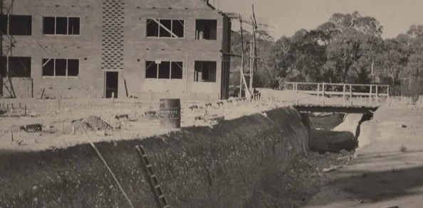

Whats Happening!

Model Modern: Iconic Design at Miniature Scale
Exhibition
15, 22, 23 and 29 April 2023, 11.00am and 2.00pm
**Exhibition is available for viewing during opening hours of Manning Clark House, with or without a tour of the House**
Canberra Modern and Manning Clark House present an exhibition of intricately crafted architectural models of iconic modernist buildings.
Created at a 1:10 scale by California native David Webb, these models include unforgettable places like Frank Lloyd Wright’s Fallingwater, and local icons such as Harry Seidler’s Bowden House in Deakin.
This event is made possible by The Mill: Architecture & Design

Model Modern - Iconic Design at a Miniature Scale
Exhibition Launch and Panel Discussion
Friday 14 April 2023, 5.30pm-7.30pm
Join us for the launch of Model Modern: Iconic Design at a Miniature Scale, an exhibition of intricate architectural models of iconic modernist buildings by David Webb.
David will share his experiences in making these models and his work at Palm Springs Modernism Week before we launch into an interactive panel discussion on communicating architecture to the public.
Refreshments provided.
Past Events

Around the Block on Grey St, Deakin
5 November 2022, 10.00am
Join Architect David Brand and Canberra Modern in Deakin for a unique perspective on one of Canberra’s iconic neighbourhoods – recounted as a raw, new pioneering suburb, built by its unique community of diplomat, public service and academic families.
Growing up in Canberra in the 1950s & ’60s was an immersive Modernist experience for David Brand, a Melbourne based architect born and raised in Deakin. Their houses and gardens express the ideals of Modern Australian living, in a Post-War age of austerity, and optimism.
Following the walk, join Canberra Modern and David Brand for an 'In Conversation' further reflecting on his childhood neighbourhood — its houses, gardens, society and attitudes, its unique Canberran demographics.
Light refreshments provided.
- 
What Lies Beneath: The Tunnels of University House and Hidden ANU
11 , 17 & 18 November 2022, 7.00pm
Post WWII and entering the cold war era, architects and bureaucrats alike were prepared for anything. Built in 1954, University House was the crown jewel of the newly established Australian National University, but more than just accommodation for staff and students, the building offered a secret safe haven in the event of a military attack on the capital in the form of complex underground tunnels. Join Canberra Modern’s Amy Jarvis and Tim the Yowie Man on a behind the scenes tour of these tunnels and learn how this building, and the rest of ANU hold a myriad of secrets and mysteries within their design and history.